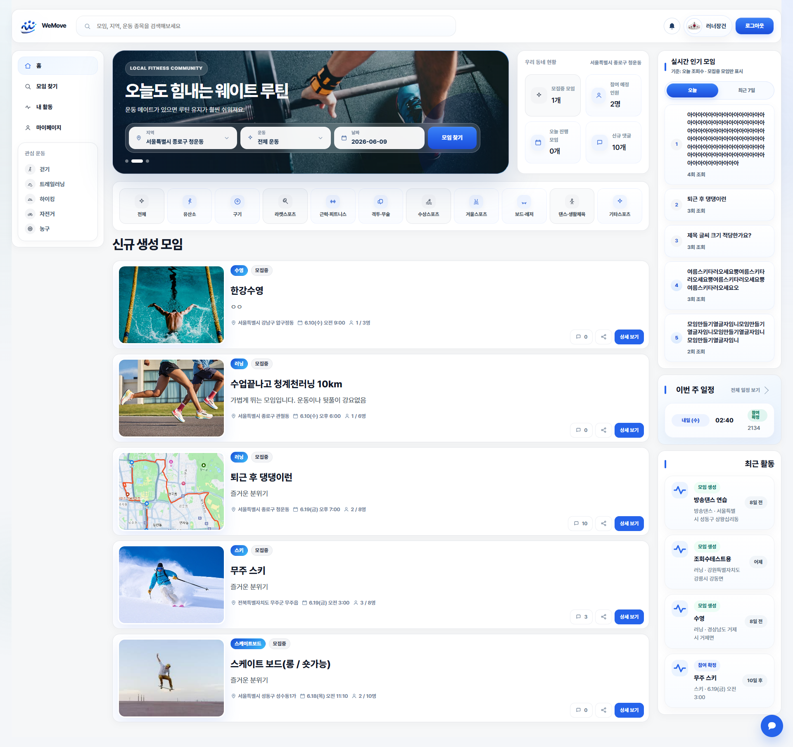

Backend
Java · Spring Boot · MyBatis · REST API · JSP · JWT
REST API 설계 및 서버 로직 구현
Junior Backend Developer
Java와 Spring Boot로 문제를 해결하는 그 과정을 담았습니다.
public class BackendDeveloper {
private String name = "Kim Nayoung";
private String role = "Junior Backend Developer";
private List<String> coreTech = List.of("Java", "Spring Boot", "MyBatis");
private String focus = "Data Integrity & Architecture";
private String currentProject = "WeMove (Latest)";
private String latestCommit = "feat: Optimize MyBatis queries";
private String status = "Looking for new opportunities";
}About Me
기계시스템 공학과를 전공하며 아이디어를 도면에 설계하고 실제 동작하는 결과물을 만들어내는 방법을 배웠습니다. 졸업 프로젝트로 '장갑형 마우스'를 설계하고 특허 출원까지 경험하며, 사용자 관점에서 문제를 분석하고 해결하는 엔지니어링의 본질을 깨달았습니다.
졸업 후에는 기계 관련 회사에서 장비의 워크플로우를 관리하며, 복잡한 문제를 구조적으로 해결하는 법을 익혔습니다. 하드웨어와 소프트웨어, 사용하는 도구는 다르지만 결국 제 본질은 같습니다. 사용자의 불편함을 포착해 시스템을 설계하고, 끝내 결과물을 구현해내는 것.
이제는 기계공학 전공과 현장의 실무에서 다져온 엔지니어링 마인드를 밑거름 삼아, 소프트웨어를 통해 더 확장성 있는 가치를 만들어가고자 합니다.
Tech Stack
Java · Spring Boot · MyBatis · REST API · JSP · JWT
REST API 설계 및 서버 로직 구현
MySQL · Oracle
데이터 모델링 및 SQL 작성
AWS EC2 · S3 · CloudFront · Docker · GitHub Actions
클라우드 인프라 구축 및 운영 자동화
HTML · CSS · JavaScript · React · Vite · jQuery
사용자 인터페이스 구현 및 API 연동
Projects

⏱ 2026.05.15 ~ 2026.06.09 (약 3주)
사용자 지역 기반 운동 모임 플랫폼입니다. 모임 생성 및 참가, 참가자 승인 상태 관리, 채팅, 관리자 기능 등을 구현한 웹 서비스입니다.

⏱ 2026.03.24 ~ 2026.04.22 (약 4주)
탄소 저감형 친환경 배달 플랫폼입니다. 사용자가 주문한 건에 대해 탄소 배출 절감 수치를 체감하고 지속가능한 친환경 소비에 동참하는 것을 목표로 개발했습니다.